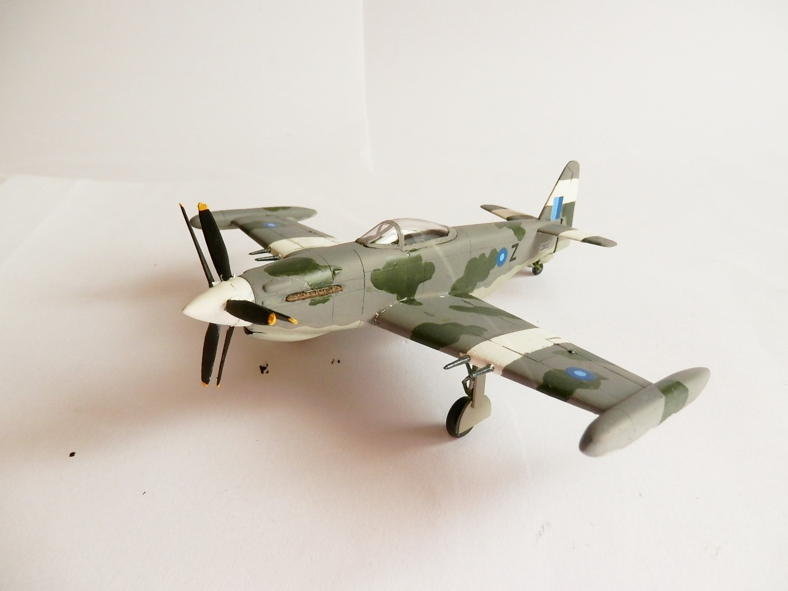
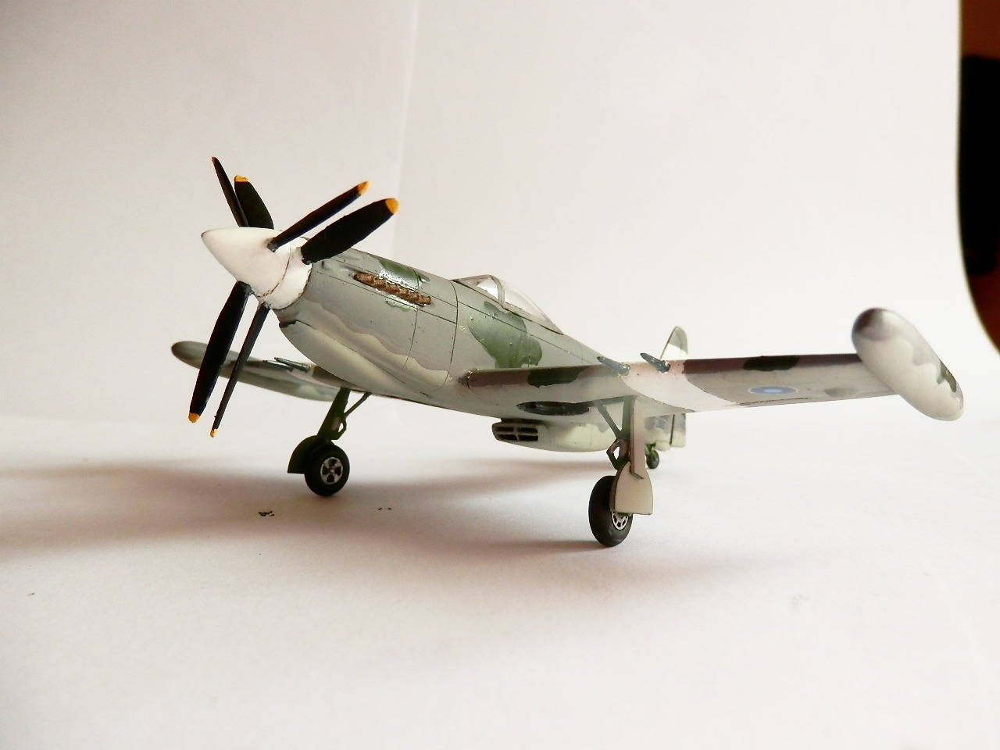
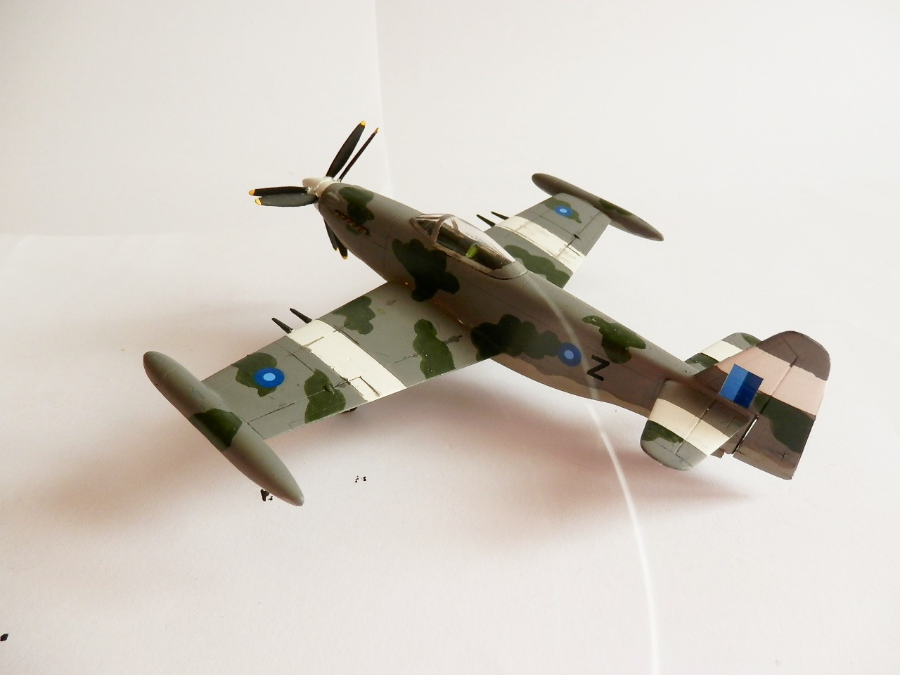
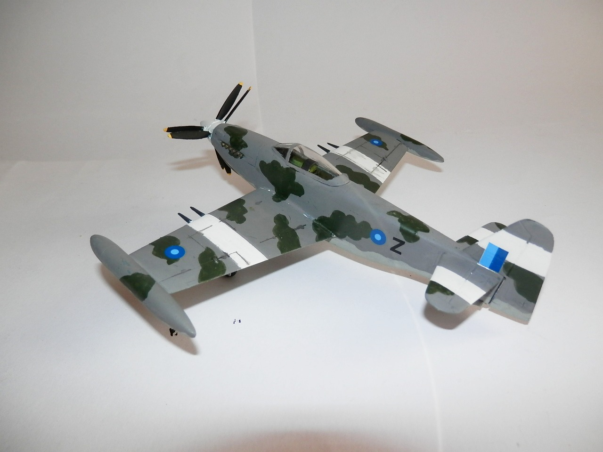

Aerei · scale model archive
Martin Baker MB6 Sky Ferret
Martin Baker MB6 Sky Ferret — Kit: AZ Models, Scale: 1772. Fictitious australian camo, evolution of the MB5 which was a quite advanced fighter plane but…

Photo gallery



English description
Fictitious australian camo, evolution of the MB5 which was a quite advanced fighter plane but was too late to be used in the II World War
Descrizione italiana
Mimetica australiana fittizia, evoluzione dell’MB5, che era un caccia piuttosto avanzato ma arrivò troppo tardi per essere impiegato nella Seconda guerra mondiale.